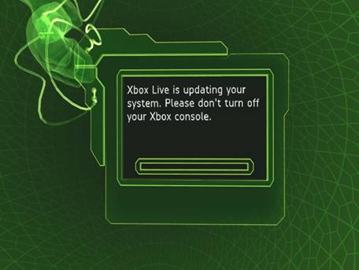
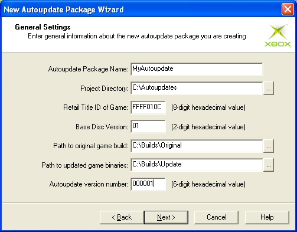
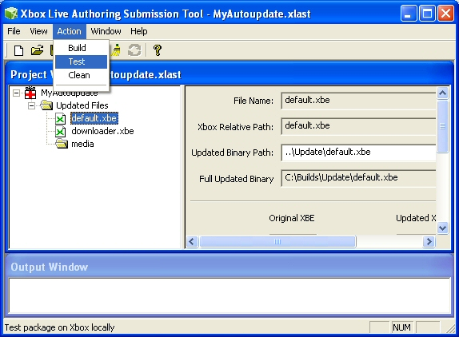

By Matt Hansen, Developer Support Engineer, Xbox Advanced Technology Group
Xbox Live™ provides the ability to update your title after it has shipped. This enables Microsoft to ensure that any potential security risks presented by a title are promptly fixed and Xbox Live continues to run smoothly.
There are two stages of supporting autoupdate. The first stage occurs before your title is released. Before you release your title, you need to make sure that it can be autoupdated if necessary. If you are currently working on shipping your title, you should read the Supporting Autoupdate in Your Shipping Title section. The second phase occurs when (or if) you need to perform an autoupdate. If you've already shipped your title and need to create an autoupdate, check out the I Need to Update My Title! section. If you just want some more information on the autoupdate process, you can check out The Nitty Gritty section.
Fortunately, it is quite simple to add autoupdate support to your title. First, ensure that both Update.xbe and DashUpdate.xbe are located in the root directory of your disc. DashUpdate.xbe is used to update the Xbox® Dashboard to the latest version. Update.xbe is used to update your title to a newer version, as necessary.
In addition to including these XBEs, your game code will need to check for a newer version of itself. When you pump the logon task—the task returned by XOnlineLogon—it will eventually return something other than XONLINETASK_S_RUNNING. If the return value is XONLINE_E_LOGON_UPDATE_REQUIRED, you need to update:
"A required update is available for the Xbox Live service. Press A to update or B to cancel. You cannot connect to Xbox Live until the update is installed."
Note It is important to note that without the update, players should not be allowed to play online. They can play offline, but online play should always require the latest update.
That should be everything you need to do in order to support autoupdate in your title.
To simplify the testing of autoupdate support, we have created a default autoupdate. This default test will "update" your title by downloading a default title that we created solely for testing autoupdate.
xbecert /testversion:0x199 default.xbe
imagebld /dump default.xbe | more
Just look for this section and verify that the title ID is your title ID and that the version number is 199:
CERTIFICATE
1EC size of certificate
3F8DA9BF time date stamp Wed Oct 15 13:10:39 2003
FFFF010C title id
207 allowed media types
80000007 game region
FFFFFFFF game ratings
0 disk number
199 version (XBE: 1, Disc: 153)
54524150 online service id

If this happens, your title correctly supports autoupdate. If your title does not detect the need for an autoupdate, when using this version, either it does not correctly support autoupdate or the default test has not yet been enabled for your title. You can verify that the default autoupdate test is enabled for your title by contacting xboxds@xbox.com.
In addition to ensuring that your title supports autoupdate, you should be sure to archive the final build you end up shipping with. If you ever need to autoupdate, you will need the shipped version of your title in order to build and test the new one.
Now your title supports an autoupdate in case you ever need to update it. What do you do if your game has already shipped and you do need to update it? The first thing you'll need to do is talk to your account manager in order to get the autoupdate approved. After it's been approved, you can start building the new version of your game and testing it locally. Once you have a build, you are ready to submit the autoupdate to Certification.
You will most likely need to modify your XBE in order to update it. Since all XBEs on the disc must have the same title ID and version number, when you autoupdate one, you must autoupdate all XBEs that logon to Xbox Live. This includes redistributable files (if your game uses these) such as Downloader.xbe. Aside from including all Xbox Live XBEs, there is nothing special that needs to be done with this build of your game. However, if you need to update additional files that are not XBEs (such as textures, fonts, sound files, and so on), you may need to update your XBE(s) to check for the presence of updated files and verify their signatures. While XBEs are automatically loaded by the system from the proper redirected location, access to additional non-XBE files is not automatically redirected.
All updated files are placed in the T:\$u folder on the Xbox. If you update a file, you will need to make sure that your game checks this location for the presence of an updated file before loading the original file off of the game disc. If the original file is located in a subfolder (let's use D:\media\font.ttf as an example), you will need to include this folder in your check. So, in our example, you would need to check whether T:\$u\media\font.ttf exists. If it does, you should load this file instead of D:\media\font.ttf.
Since these files are stored on the hard disk, you will need to verify that they pass content protection. For more information on content protection, check out this white paper: Content Protection on the Xbox. If the file does not pass content protection, or it does not exist in T:\$u and you need the updated version, you should inform the user, delete the entire $u folder, and reboot. This will eliminate all the updated bits, and when your title logs in to Xbox Live again, it will re-download the updated files. Of course, you will need to inform users of what is happening, and you can't allow them to lose any progress.
Note that, by using this solution, you may encounter a situation where you cannot proceed if your update package was built incorrectly. To avoid this, make sure you test loading each updated file to ensure that it passes content protection. You may also want to inform the Certification team of any files that are not loaded until certain points in the title, and let them know how to get them loaded. This should help you avoid potential problems with corrupt autoupdate packages.
Note Update.xbe wipes out the cache partition while performing the update. Because of this, you need to ensure that your title is not dependent on valid data being in the cache partition after the update. This is especially important because any problems here will likely not be detected until your autoupdate is in Certification.
Once you have the new bits you are going to use, you will need to build the autoupdate package. To build this, you will need the original bits you shipped your game with and the new bits you want to update to. Once you have both of these, you can create your autoupdate package using the Xbox Live Authoring and Submission Tool (XLAST):

CERTIFICATE
1EC size of certificate
3F8DA9BF time date stamp Wed Oct 15 13:10:39 2003
FFFF010C title id
207 allowed media types
80000007 game region
FFFFFFFF game ratings
0 disk number
199 version (XBE: 1, Disc: 153)
54524150 online service id
The last two digits of the version number (in this case, they are 99) are the disc number in hex.
You should now have an autoupdate package. Your testing team will need to use this XLAST project to test the autoupdate.
To test the new bits, you can use XLAST to install them locally. XLAST will then install these bits in the same location that Update.xbe installs them when updating. To test this with XLAST, simply open the autoupdate project and select the Test option from the Action menu:

This will install the new bits to the default Xbox. You then need to run your title from a DVD using either a DVD-R or the DVD Emulator. When you launch your title from a DVD, it will use the updated files. You can verify that the updated files are being loaded by running XbWatson while launching your game. After your title has been updated, you should see the following message whenever you launch it:
WRN[XAPIBOOT]: Rebooting into t:\$u\default.xbe
This output indicates that the updated XBE has been launched instead of the XBE on the DVD.
As previously noted in the Creating the New Bits section above, you will want to ensure that all new, non-XBE files will load correctly. You will also want to test for corruption in all of these files using the XbSGCorrupt tool. For more details on how to test against content protection, check out this white paper (Content Protection on the Xbox.)
When you are ready to submit your autoupdate package, select Build from the Action menu in XLAST. This will create an .AUP file, which you can then submit to Certification. This file contains all the information the Certification team needs to create and test your autoupdate. Be sure to include the Submission CRC that XLAST gives you in the Output Window.
Note again that the update will clear the cache for your title. This is because Update.xbe uses the cache to create the updated bits locally. Be sure that your title does not depend on the presence of data in the cache partition, or you may run into a problem when the title is first launched from Update.xbe.
If you're interested in more details about autoupdates, this section is for you. If you're content in just knowing that it works, you can skip this section and return to making more great games.
Autoupdates are downloaded to the Title Persistent region of the Xbox hard disk. They are specifically placed in the T:\$u folder. If your title is not running, you can get to this folder from Xbox Neighborhood by navigating to S:\[title_id]\$u. Any files that are updated in subfolders (media\font.ttf) will be placed in subfolders under T:\$u (T:\$u\media\font.ttf).
The autoupdate package that is placed on the Xbox Live servers contains some metadata about the autoupdate as well as the bitwise difference between the original files and the new files. By storing and downloading only the difference, we can decrease the size of most autoupdates so that downloading the update is quicker. The update itself is broken apart into smaller chunks (about 10 KB) to allow for resumption of a failed download.
When a title needs to perform the update, Update.xbe is launched and does the updating. It wipes out the cache partition of your title and uses this area to store the new files created by adding the difference (the downloaded bits) to the original files (from the DVD). These updated files are placed in the Title Persistent region of the hard disk and Update.xbe then reboots.
Upon reboot, the Xbox kernel will try to launch the default executable, which is D:\default.xbe. All Xbox Live titles are compiled with special startup code that first checks for an updated version in T:\$u and, if it detects one, will reboot to the updated version instead of the one from the disc.
You may update any file on the disc. It's important to note, however, that if you update non-XBE files, you will need to make sure you check specifically for the updated files and use content protection to ensure that they have not been tampered with. There is more information on this in the Creating the New Bits section above.
There is no need to update either Update.xbe or DashUpdate.xbe. However, any other XBEs that log in to Xbox Live will always need to be updated. Since all other XBEs on the disc must have the same title ID and version number, when you autoupdate one, you must autoupdate all of them together. This includes Downloader.xbe.
You can also update XBEs that don't link with xonlines.lib, but they will not be able to initialize the autoupdate process. That process will be initiated only when you log in to Xbox Live.
Autoupdates can be configured to work only on specific Xbox consoles. The Certification team uses this feature to test autoupdates before making them available to everyone. Each Xbox has a unique serial number. An autoupdate can be set up to work only for specific Xbox consoles based on their serial number. Once the autoupdate is ready to go, it will be made global and will be applied to all Xbox consoles.
Version numbers are made up of two parts, a two-digit disc number and a six-digit XBE version number. The disc number is the last two digits in the version number, and the XBE version number is the first six digits. Let's take a look at an example header (taken from imagebld /dump):
CERTIFICATE
1EC size of certificate
3F8DA9BF time date stamp Wed Oct 15 13:10:39 2003
FFFF010C title id
207 allowed media types
80000007 game region
FFFFFFFF game ratings
0 disk number
21799 version (XBE: 535, Disc: 153)
54524150 online service id
In this example, the disc number is 0x99, or 153 in decimal, and the XBE version is 0x217, or 535. When a game is shipped, it is given an initial XBE version number and disc number. If multiple versions are shipped, each is given a different disc number so it can be updated independently. For example, the first release of a title may be given a disc version number of 1. A subsequent release (in a different region, for example) would be given a different disc version number. Any autoupdate will affect titles only with the same disc number. So, for example, you could autoupdate only the discs that were released first (disc 1.) Xbox Live keeps track of which versions are valid and which ones need to be updated as well as which version you need to update to. In our example case with two discs, the update table would look something like this:
| Base Version | Update Version |
|---|---|
| 0x001 | 0x101 |
| 0x101 | 0x101 |
| 0x002 | 0x002 |
This means that if you log in with a version of 0x001, you will be updated to 0x101. If you log in with a version of 0x101 or 0x002, you will not be updated because your version number matches the updated version number for that disc.
Note that all Xbox Live–enabled XBEs on the disc must have the same title ID and the same version number. If you ever create an autoupdate, you must include all Xbox Live–enabled XBEs (aside from Update.xbe and DashUpdate.xbe) in the update. This is because any XBE that logs in to Xbox Live will check the above table to see whether it needs an update. If, for example, you updated default.xbe only and did not update Downloader.xbe, then Downloader.xbe would not be able to log in because it would no longer have a current version number.
If you have additional questions or run into problems, feel free to contact xboxds@xbox.com. We will be glad to assist you in getting autoupdate to work properly for your title.